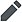

Wikipedia:About
Wikipedia is a free online encyclopedia that anyone can edit in good faith, and tens of millions already have!
Wikipedia's purpose is to benefit readers by containing information on all branches of knowledge. Hosted by the Wikimedia Foundation, it consists of freely editable content, whose articles also have numerous links to guide readers to more information.
Written collaboratively by largely anonymous volunteers, anyone with Internet access (and who has not been blocked) can write and make changes to Wikipedia articles, except in limited cases where editing is restricted to prevent disruption or vandalism. Since its creation on January 15, 2001, it has grown into the world's largest reference website, attracting over a billion visitors monthly. It currently has more than sixty-one million articles in more than 300 languages, including 6,654,833 articles in English with 126,965 active contributors in the past month.
Wikipedia's fundamental principles are summarized in its five pillars. The Wikipedia community has developed many policies and guidelines, although editors do not need to be familiar with them before contributing.
Anyone can edit Wikipedia's text, references, and images. What is written is more important than who writes it. The content must conform with Wikipedia's policies, including being verifiable by published sources. Editors' opinions, beliefs, personal experiences, unreviewed research, libelous material, and copyright violations will not remain. Wikipedia's software allows easy reversal of errors, and experienced editors watch and patrol bad edits.
Wikipedia differs from printed references in important ways. It is continually created and updated, and encyclopedic articles on new events appear within minutes rather than months or years. Because anyone can improve Wikipedia, it has become more comprehensive, clear, and balanced than any other encyclopedia. Its contributors improve the quality and quantity of the articles as well as remove misinformation, errors, and vandalism. Any reader can fix a mistake or add more information to articles (see Researching with Wikipedia).
Begin by simply clicking the [edit] or [edit source] buttons or the pencil icon  at the top of any non-protected page or section.
Wikipedia has tested the wisdom of the crowd since 2001 and found that it succeeds.
| About Wikipedia | |||||
|---|---|---|---|---|---|
| Readers' FAQ | |||||
| Introductions to contributing | |||||
| Policies and guidelines | |||||
| Getting help | |||||
| Wikipedia community | |||||
| Sourcing and referencing |
| ||||
| How-to guides | |||||
| Wiki markup | |||||
| Directories and glossaries | |||||